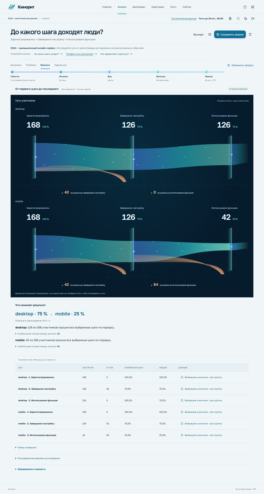
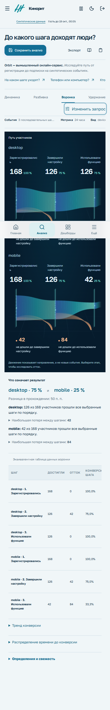

Телефон или компьютер?
Сравните, сколько людей проходит путь от регистрации до ключевой функции. Один рабочий вопрос — в двух форматах интерфейса.
С компьютера
75%126 из 168 участников дошли до результатаС телефона
25%42 из 168 участников дошли до результатаСледующий шаг
Где уходят?Сравнить переходы и открыть участников

Параметры, участники и результаты доступны в обеих компоновках. Широкие таблицы прокручиваются внутри своей области.